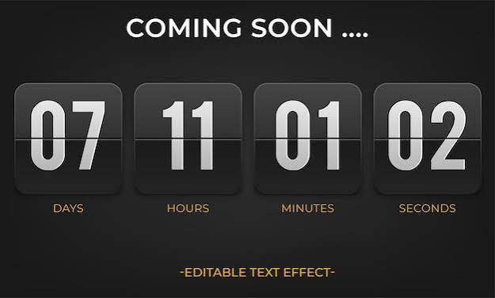

Como Conocer Mi Fraternidad
1- Debes acceder al link que su maestro o tutor les envio:
2- Dentro de la pagina ustedes selccionaran el apartado de alumno y una vez ahi ustedes introduciran su numero de control que encontraran el su credencial de estudiante:
3- Una vez que introduzcan de manera correcta su numero de control les mostrara una cuenta regresiva de caunto tiempo falta para que puedan conocer su fraternidad :
